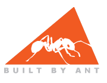
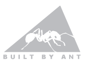
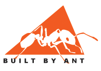
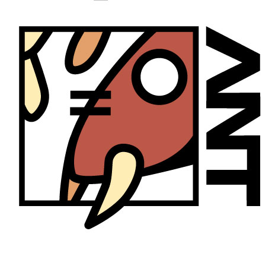
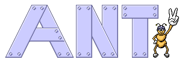
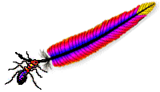

Apache Ant
Download
Jakarta
Get Involved
The final poll results: Sparklit Poll Results The Ant Committers will be voting on the official Ant Logo this week based on the poll results and the original artists' committment to work with us to refine the fonts, colors, sizes, and formats of the chosen logo(s).
The final poll results: Sparklit Poll Results
The Ant Committers will be voting on the official Ant Logo this week based on the poll results and the original artists' committment to work with us to refine the fonts, colors, sizes, and formats of the chosen logo(s).
   by Nick King (nickk at remoteapps.com)
 Adam James (adam_james_ at hotmail.com) Justin Ransom (Justin.Ransom at rubus.com)  Christoph Wilhelms (Christoph.Wilhelms at t-online.de)  Scott Andrews (scott.andrews at bankofamerica.com)
<ant> \_/ \(_)/ -(_)- /(_)\ Conor MacNeill
<ant> \_/ \(_)/ -(_)- /(_)\
Special thanks go to all the contestants - a lot of hard work was put into these entries. Your contributions to Ant are very much appreciated. All the entries can be found at the logo entry archive
Special thanks go to all the contestants - a lot of hard work was put into these entries. Your contributions to Ant are very much appreciated.
All the entries can be found at the logo entry archive